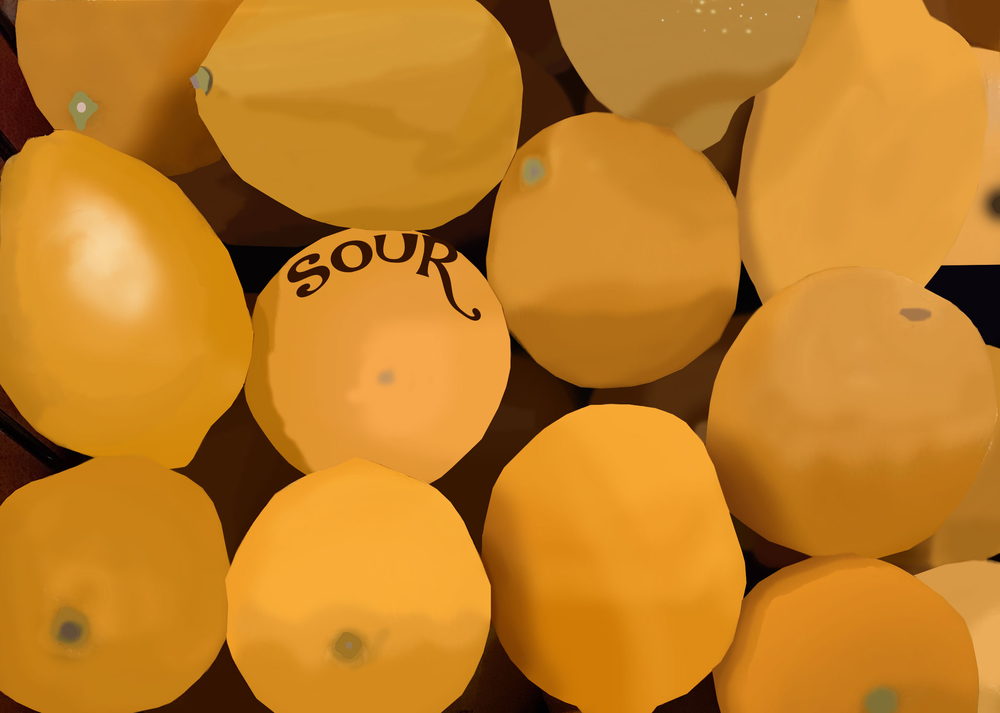

This is a image of lemons and this piece of art is inspire by Herman Miller. This isn't even the full picture of the lemons I took a photo of their was a lot of lemons. In a way this also goes with the saying when life gives you lemons what
do you do with it, in this case I turn it into art.
These are flowers that I made and is also inspire by Herman Miller. I made this because I felt the need to make something calm that would have a whooa factor and I feel like I have accomplished that. It's not the best, there could be
multiple things that I can do to make it better, like make the colors blend better, and fix the shadow up more. I was just in a rush when I made it.
This is a poster for a fashion design class. I made this for an assignment that required me to make a fashion poster. The things I would like to improve on this is the background, I feel like it could be changed to something better. The inspiration for this poster is covers of magazines.